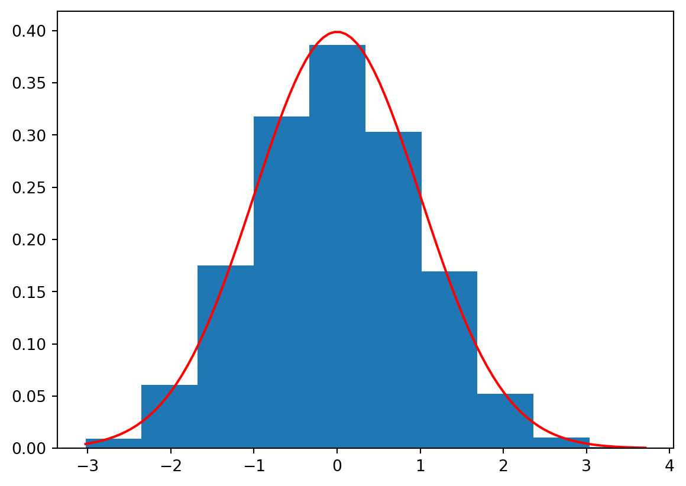

import numpy as np
pxy = np.array([[0.1, 0.15, 0.05, 0.25],
[0.15, 0.05, 0.15, 0.1]])
pxyarray([[0.1 , 0.15, 0.05, 0.25],
[0.15, 0.05, 0.15, 0.1 ]])Consider an example similar to the one discussed on a lecture: let \(X:\Omega\to\{0,1\}\) and \(Y:\Omega\to\{0, 1, 2, 3\}\) be two discrete random random variables whose joint probability mass function
\[ p_{X,Y}(x_i,y_j)=\mathbb{P}(X=x_i, Y=y_j), \qquad x_i\in \{0,1\}, y_j\in \{0.1,2,3\} \]
is given through the following table:
| \(X\) \(\backslash\) \(Y\) | \(0\) | \(1\) | \(2\) | \(3\) |
|---|---|---|---|---|
| \(0\) | \(0.1\) | \(0.15\) | \(0.05\) | \(0.25\) |
| \(1\) | \(0.15\) | \(0.05\) | \(0.15\) | \(0.1\) |
(so that here, e.g. \(p_{X,Y}(0,0)=0.1\), \(p_{X,Y}(0,3)=0.25\) and so on).
The values of \(p_{X,Y}\) naturally form a matrix, of size \(2\times 4\). To work with this matrix in Python, we will use two-dimensional Numpy-arrays:
import numpy as np
pxy = np.array([[0.1, 0.15, 0.05, 0.25],
[0.15, 0.05, 0.15, 0.1]])
pxyarray([[0.1 , 0.15, 0.05, 0.25],
[0.15, 0.05, 0.15, 0.1 ]])Note that indents inside np.array are NOT important, you may write e.g. everything in one line.
Recall that marginal distributions (i.e. distributions of \(X\) and of \(Y\) separately) can be obtained from this table by summing over rows (for \(X\)) or columns (for \(Y\)):
\[ \begin{aligned} p_X(x_i)&=\mathbb{P}(X=x_i) = \sum_{j}p_{X,Y}(x_i,y_j),\\ p_Y(y_j)&=\mathbb{P}(Y=y_j) = \sum_{i}p_{X,Y}(x_i,y_j). \end{aligned} \]
In Numpy, we can sum-up along any dimension, called axis. The first dimension (rows) corresponds to axis = 0, the second dimension (columns) corresponds toaxis = 1. However, to get sums of elements in each row of array pxy we can write np.sum(pxy, axis = 1) or pxy.sum(axis = 1):
px = np.sum(pxy, axis = 1)
pxarray([0.55, 0.45])i.e. \(\mathbb{P}(X=0)=0.55\) (the sum of the first row) and \(\mathbb{P}(X=1)=0.45\) (the sum of the second row).
The reason of axis = 1 here is that these sums naturally form a column:
| \(X\) \(\backslash\) \(Y\) | \(0\) | \(1\) | \(2\) | \(3\) | sum of row |
|---|---|---|---|---|---|
| \(0\) | \(0.1\) | \(0.15\) | \(0.05\) | \(0.25\) | \(0.55\) |
| \(1\) | \(0.15\) | \(0.05\) | \(0.15\) | \(0.1\) | \(0.45\) |
Similarly, to get the sums of all columns we write np.sum(pxy, axis = 0) or pxy.sum(axis = 0) as the results form a row:
py = pxy.sum(axis = 0)
pyarray([0.25, 0.2 , 0.2 , 0.35])i.e. \(\mathbb{P}(Y=0)=0.25\) (the sum of the first column) and so on:
| \(X\) \(\backslash\) \(Y\) | \(0\) | \(1\) | \(2\) | \(3\) |
|---|---|---|---|---|
| \(0\) | \(0.1\) | \(0.15\) | \(0.05\) | \(0.25\) |
| \(1\) | \(0.15\) | \(0.05\) | \(0.15\) | \(0.1\) |
| sum of column | \(0.25\) | \(0.2\) | \(0.2\) | \(0.35\) |
Another way of thinking is that axis = 0 tells “to get rid of” rows, so only columns would remain (that’s why py has 4 components, the number of columns in the original pxy), whereas axis = 1 tells to get rid of columns so only 2 rows remain in px.
Note that, as it should be, the sum of all probabilities for \(X\) is \(1\), and the same sum for \(Y\) is \(1\). Again, we can use either np.sum(px) or px.sum() command:
[np.sum(px), py.sum()][1.0, 1.0]This corresponds to
\[ \sum_{i}\sum_{j}p_{X,Y}(x_i,y_j)=1. \]
We will also need the array of values of \(X\) and of \(Y\). In this case, they can be defined manually:
x = np.array([0,1])
xarray([0, 1])or using e.g. arange function:
y = np.arange(4)
yarray([0, 1, 2, 3])We can e.g. calculate
\[ \mathbb{E}(X) = x_1\cdot \mathbb{P}(X=x_1)+\ldots + x_n\cdot \mathbb{P}(X=x_n) \]
We discussed how to do this using basic entry-wise product of arrays in Numpy, however, it can be also done faster, using the dot-product of the arrays x and px (you will study the dot-product or inner-product of vectors in MA-M26). Namely, for vectors \(a=(a_1,\ldots,a_n)\) and \(b=(b_1,\ldots,b_n)\),
\[
a \cdot b = a_1b_1+\ldots+b_n b_n.
\] In Numpy, we can write just a.dot(b), or b.dot(a) (the results will be the same).
Calculate \(\mathbb{E}(X)\) and \(\mathbb{E}(Y)\) and assign the results to mx and my, respectively.
Check the answer:
[mx, my][0.44999999999999996, 1.65](Surely, \(\mathbb{E}(X)=0\cdot 0.55+1\cdot 0.45=0.45\), so here it’s just a rounding error.)
Recall that
\[ \mathbb{E}(XY) = \sum_{i}\sum_{j} x_i\cdot y_j \cdot p_{X,Y}(x_i,y_j)=\sum_{i}x_i\cdot \sum_{j} y_j \cdot p_{X,Y}(x_i,y_j). \]
For each \(x_i\), the second sum \(\sum\limits_{j} y_j\cdot p_{X,Y}(x_i,y_j)\) is nothing but the \(i\)-th component of the vector \(Qy\), where \(Q\) is the matrix whose entries are \(p_{X,Y}(x_i,y_j)\):
\[ Q = \begin{pmatrix} p_{X,Y}(x_1,y_1) & \ldots & p_{X,Y}(x_1,y_n)\\ \vdots & \vdots &\vdots\\ p_{X,Y}(x_m,y_1) & \ldots & p_{X,Y}(x_m,y_n) \end{pmatrix} \]
(in our example, \(m=2\), \(x_1=0\), \(x_2=1\), \(n=4\), \(y_1=0\), \(y_2=1\), \(y_3=2\), \(y_4=3\)).
and for \(y=(y_1,\ldots, y_n)\), we indeed have that \(Qy = ((Qy)_1, \ldots, (Qy)_m)\) and
\[ (Qy)_i = \sum_{j} y_j \cdot p_{X,Y}(x_i,y_j). \]
The Numpy command is the same Q.dot(y) (in our case Q was previously denoted pxy), though here the order is important (we multiply a matrix by a vector).
Qy = pxy.dot(y)
Qyarray([1. , 0.65])and now
\[ \mathbb{E}(XY) = \sum_{i} x_i \cdot (Qy)_i = x\cdot Qy, \]
i.e.
mxy = x.dot(Qy)
mxy0.65Surely, it was possible to do not introduce the intermediate Qy and claculate all in one command:
x.dot(pxy.dot(y))0.65Find \(\mathrm{cov}(X,Y)=\mathbb{E}(XY) - \mathbb{E}(X)\mathbb{E}(Y)\) and assign it to covxy.
Check the answer:
covxy-0.09249999999999992Find \(\sigma(X)\) and \(\sigma(Y)\) using the formulas
\[ \sigma^2(X)=\mathrm{Var}(X)= \mathbb{E}(X^2)- (\mathbb{E}(X))^2 \]
and assign them to sx,sy, respectively. Recall that the square root can be obtained by using np.sqrt function.
Check the answer:
[sx, sy][0.49749371855331, 1.1947803145348523]Find \(\mathrm{corr}(X,Y)=\frac{\mathrm{cov}(X,Y)}{\sigma(X)\sigma(Y)}\) and assign it to corrxy.
Check the answer:
corrxy-0.15562023709382963Therefore, \(X\) and \(Y\) are weakly negatively correlated.
Download file jointdistr.csv, and upload it to anaconda.com/app. Import Pandas library and load the data from this file to Pandas data frame df.
Check the result:
df.head()| 0 | 1 | 2 | 3 | 4 | 5 | 6 | 7 | 8 | 9 | 10 | 11 | 12 | 13 | 14 | 15 | 16 | 17 | 18 | |
|---|---|---|---|---|---|---|---|---|---|---|---|---|---|---|---|---|---|---|---|
| 0 | 0.003 | 0.005 | 0.001 | 0.002 | 0.004 | 0.001 | 0.005 | 0.004 | 0.004 | 0.004 | 0.003 | 0.006 | 0.001 | 0.004 | 0.006 | 0.001 | 0.006 | 0.003 | 0.005 |
| 1 | 0.001 | 0.006 | 0.002 | 0.006 | 0.001 | 0.006 | 0.006 | 0.002 | 0.002 | 0.002 | 0.003 | 0.003 | 0.006 | 0.006 | 0.001 | 0.006 | 0.002 | 0.001 | 0.001 |
| 2 | 0.001 | 0.001 | 0.006 | 0.004 | 0.004 | 0.001 | 0.004 | 0.006 | 0.005 | 0.006 | 0.006 | 0.004 | 0.001 | 0.004 | 0.003 | 0.006 | 0.001 | 0.001 | 0.005 |
| 3 | 0.005 | 0.005 | 0.002 | 0.004 | 0.006 | 0.006 | 0.006 | 0.004 | 0.001 | 0.005 | 0.006 | 0.006 | 0.001 | 0.006 | 0.003 | 0.006 | 0.006 | 0.001 | 0.001 |
| 4 | 0.001 | 0.006 | 0.006 | 0.002 | 0.001 | 0.001 | 0.004 | 0.001 | 0.002 | 0.002 | 0.001 | 0.001 | 0.002 | 0.005 | 0.005 | 0.001 | 0.003 | 0.006 | 0.001 |
We can also inspect the size of the data frame:
df.shape(15, 19)It is possible to work with the data frame directly, but for simplicity, we convert its content into Numpy array:
pxy = df.to_numpy()Look at the output of pxy (it’s quite long).
Let \(X\in\{0,\ldots,14\}\) and \(Y\in\{0,\ldots,18\}\) be discrete random variables with the joint distribution given by the table above. Find \(\mathrm{corr}(X,Y)\).
Check the answer:
corrxy-0.014393645358846184Recall that these two statements describe the behaviour of a sample mean
\[ \overline{X}_n = \frac{X_1+\ldots+X_n}{n} \]
for independent identically distributed random variables \(X_1,X_2,\ldots\).
Consider \(n=5\) values of e.g. binomial random variable \(X\sim Bin(10, 0.3)\) (see Lab 3):
from scipy.stats import binom
n = 5
x = binom.rvs(10, 0.3, size = n, random_state = 12)
xarray([2, 4, 2, 3, 0], dtype=int64)We know that, for \(X\sim Bin(10,0.3)\), \(\mathrm{E}(X)=10\cdot 0.3=3\). If you don’t remember the formula, you can use Python:
binom.mean(10, 0.3)3.0On the other hand,
x.mean()2.2As we can see, the result is quite different from \(\mathbb{E}(X)=3\).
Repeat the previous calculations fr \(n=50\), use the same random_state = 12. Assign \(\overline{X}_n\) to xbar.
Check the answer:
xbar3.06That is much closer to \(\mathbb{E}(X)=3\).
Surely, if you change random_state, you will get another sample and another value of \(\overline{X}_n\), that may be more or less closer to \(\mathbb{E}(X)\). Let now generate many such samples (of the same size \(n=50\)).
We will use a loop for this. The following code generates \(K=50\) samples of length \(n=50\) of values of \(X\sim Bin(10,0.3)\) and store the sample means in the list Xbar (we use the loop index as the random state, it’s not compulsory, of course):
n = 50
K = 50
Xbar = []
for i in range(K):
x = binom.rvs(10, 0.3, size = n, random_state = i)
Xbar.append(x.mean())Look at the output of Xbar.
Note that more “Pythonic”-way would be to use the list comprehension:
Xbar = [np.mean(binom.rvs(10, 0.3, size = n, random_state = i)) for i in range(K)]We will work with a Numpy array, not just a list:
Xbar = np.array(Xbar)Now, suppose we want to calculate \(\mathbb{P}(\overline{X}_{n=50}<2.9)\). We may look at the proportion of the entries of Xbar which are less than 2.9: namely, Xbar<2.9 is the list of True and False, where True = 1 and False = 0. Hence, the sum of this list gives the number of True among all \(K\) trials. Dividing by \(K\) we get the desired proportion:
p = sum(Xbar < 2.9)/K
p0.28Next, we know that \(\mu=\mathbb{E}(X)=3\) and \(\sigma=\sigma(X)=\sqrt{10\cdot0.3\cdot(1-0.3)}=1.449\), or:
binom.std(10, 0.3)1.4491376746189437Then
\[ \begin{aligned} \mathbb{P}(\overline{X}_{n=50}<2.9)&= \mathbb{P}\biggl(\frac{\overline{X}_{n}-\mu}{\frac{\sigma}{\sqrt{n}}}<\frac{2.9-\mu}{\frac{\sigma}{\sqrt{n}}}\biggr)\\ &=\mathbb{P}(Z_n <\underbrace{\frac{2.9-3}{\frac{1.449}{\sqrt{50}}}}_{\color{red}=z}) \end{aligned} \]
z = (2.9 - binom.mean(10, 0.3))/(binom.std(10, 0.3)/np.sqrt(n))
z-0.48795003647426705By CLT, since \(z<0\),
\[ \mathbb{P}(\overline{X}_{n=50}<2.9)\approx \Phi(z)=\Phi(-0.488). \]
We have
from scipy.stats import norm
norm.cdf(z)0.31279261576216244and we see that the value is quite close to the previously found p. Recall that p was the frequency of the event \(\overline{X}_{n=50}<2.9\) in \(K=50\) trials, rather than real probability.
Repeat the previous considerations find p for \(K=1000\).
Check the answer:
p0.306The answer now is closer to the desired \(\Phi(z)\).
We can also build the histogram for e.g. \(Z_n=\frac{\overline{X}_n-\mu}{\frac{\sigma}{\sqrt{n}}}\) and compare it visually with the PDF of the standard normal distribution:
import matplotlib.pyplot as plt
Z = (Xbar - binom.mean(10, 0.3))/(binom.std(10, 0.3)/np.sqrt(n))
plt.hist(Z, bins = 10, density = True) # To have density values, i.e. the frequences
x = np.linspace(min(Z), max(Z), 100)
plt.plot(x, norm.pdf(x), color = 'r')
plt.show()
Generate \(K=10000\) samples of \(n=50\) exponential random variables with the parameter \(\lambda=0.1\). Use random_state equal to loop index as before. Calculate \(p\approx\mathbb{P}(\overline{X}_{50}<9.5)\) from the frequency of the corresponding events. Calculate the approximate value \(q=\Phi(z)\) of \(\mathbb{P}(\overline{X}_{50}<10)\) using the central limit theorem. (Don’t forget that expon from scipy.stats has the parameter scale inverse to \(\lambda\).)
Check the difference:
np.abs(p-q)0.01326319508411844